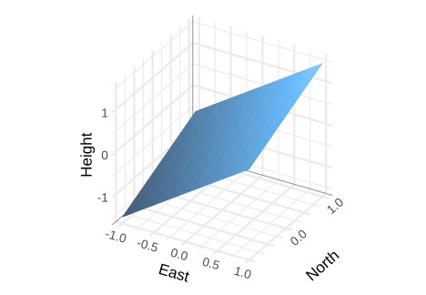
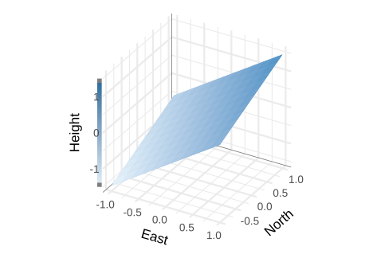
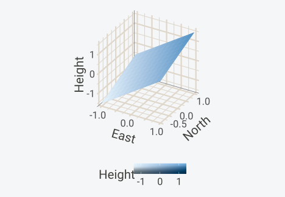
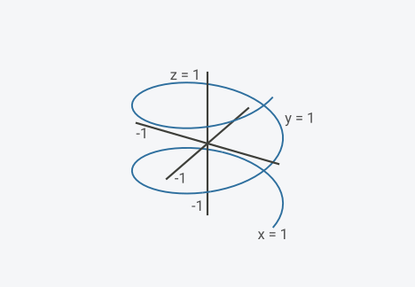

Axes and legends connect the displayed geometry to the variables in a table. This article labels a height surface, places its colourbar beside the z axis and adjusts the surrounding panes and grids. It assumes the mappings introduced in Get started. Camera and framing explains the view angles used here.
Set the breaks and labels on each position scale.
Choose axis guides and a colour guide.
Style the panel with theme elements.
Example
Labelling positions
The surface is a regular grid with a height computed at every x/y pair. Scales choose the breaks and their text; guide_axis_3d() places that text beside the projected box. Automatic placement selects an exterior edge for the current view.
surface <- expand.grid(x = seq(-1, 1, length.out = 12),
y = seq(-1, 1, length.out = 12))
surface$z <- with(surface, x + y / 2)
p <- ggplot(surface, aes(x, y, z = z, fill = z)) +
geom_surface_3d(colour = NA) +
labs(x = "East", y = "North", z = "Height")
p + guides(fill = "none", x = guide_axis_3d(label_orientation = "edge"),
y = guide_axis_3d(label_orientation = "edge")) +
scale_z_continuous(breaks = c(-1, 0, 1)) + coord_3d()
Screen-oriented tick labels remain upright on the page. Edge
orientation rotates them along the projected axis. Plane orientation
uses font outlines that participate in scene visibility and requires the
systemfonts package. Use fewer scale breaks or additional label rows
when labels crowd together. Setting an axis title to NULL
through labs() removes that title.
Matching a colourbar to height
When fill and height map the same expression, guide_colourbar_3d() can place the colourbar beside the z axis. The axis supplies the breaks, labels and title. Both mappings below use the column z.
p + scale_fill_gradient(low = "#DCEAF3", high = "#2E6F9E",
guide = guide_colourbar_3d(along = "z")) +
scale_z_continuous(breaks = c(-1, 0, 1)) + coord_3d()
The mapped expression must match in every layer using that colour
scale. For a colour representing another variable, set
along = NULL to use a separate legend. Adding the shading
range shows how lighting changes each fill colour.
p + scale_fill_gradient(low = "#DCEAF3", high = "#2E6F9E",
breaks = c(-1, 0, 1), name = "Height",
guide = guide_colourbar_3d(along = NULL, shading_range = TRUE)) +
coord_3d()
Discrete fills use guide_legend_3d(). Binned scales use the colour-step or bin guides from the same family. Lighting and surface styles demonstrates their keys and the lighting controls.
Styling panes and grids
Theme elements for the z axis inherit the general axis settings. Pane names identify their normal axis: the z pane lies in the x/y plane. Grid element names identify both the measured axis and the plane containing the grid line.
p + guides(fill = "none") + coord_3d() +
theme(axis.title.z = element_text(colour = "#2E6F9E"),
panel.pane.z = element_rect(fill = "#DCEAF3", colour = NA),
panel.grid.major.x.xy = element_blank(),
panel.grid.minor = element_blank(),
panel.box = element_line(linewidth = 0.5))
| Element | Applies to |
|---|---|
axis.text.z |
z tick labels |
axis.title.z |
z title |
panel.pane.x |
y/z pane |
panel.pane.y |
x/z pane |
panel.pane.z |
x/y pane |
panel.grid.major.z.xz |
z grid lines in the x/z pane |
panel.box.front |
front box edges |
Drawing axes through a data point
An origin axis passes through a supplied data position. Its lines and ticks participate in scene visibility, so surfaces can cover them. The following point plot places all axes through zero and removes the surrounding box.
points <- surface[c(1, 12, 66, 79, 133, 144), ]
ggplot(points, aes(x, y, z = z)) +
geom_point_3d(size = 3, colour = "#2E6F9E") +
scale_x_continuous(breaks = c(-1, 1), labels = c("-1", "x = 1")) +
scale_y_continuous(breaks = c(-1, 1), labels = c("-1", "y = 1")) +
scale_z_continuous(breaks = c(-1, 1), labels = c("-1", "z = 1")) +
labs(x = NULL, y = NULL, z = NULL) +
coord_3d(axis_lines = "origin", origin = c(x = 0, y = 0, z = 0),
panes = character(), box = "none")
Use guide_axis_3d(position = "origin") on an individual
axis to move only that guide. The z scale
covers transformed breaks and facet ranges, and Documents shows how to
add a description of the finished figure.